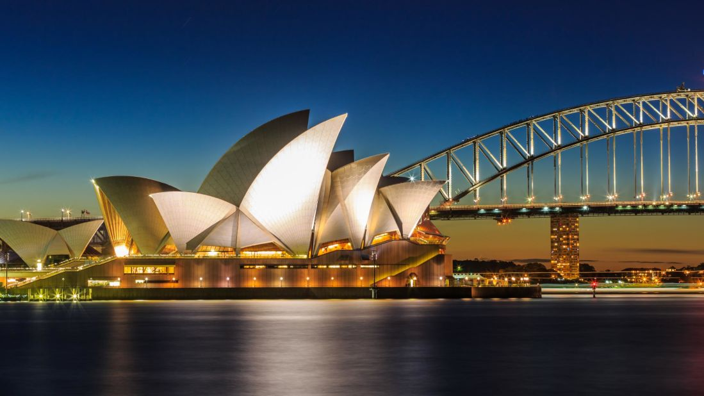

Australia
Sydney, the vibrant capital of New South Wales, is one of Australia's largest cities, best known for its harbourfront Sydney Opera House, with a distinctive sail-like design. Immersed in natural beauty with stunning beaches, including the famous Bondi Beach, and impressive skyscrapers, Sydney offers a unique blend of architectural innovation and natural landscapes. The city is also famous for the Sydney Harbour Bridge and its lush Royal Botanic Gardens. Rich in culture and history, Sydney provides a bustling cosmopolitan atmosphere with a diverse population, making it a must-visit destination for travellers from around the world.
Destinations in Sydney
- Sydney Opera House
- Bondi Beach
- Sydney Harbour Bridge
Photo Gallery


Cape Town, South Africa
Cape Town, set on South Africa's stunning southwestern coast, is a picturesque city known for its breathtaking natural beauty, including the iconic Table Mountain and the serene Kirstenbosch National Botanical Gardens. The city's rich history is evident in landmarks like Robben Island, where Nelson Mandela was imprisoned, and its vibrant Victoria & Alfred Waterfront, a hub of shopping, dining, and cultural activities. Cape Town's blend of natural wonders, historical significance, and modern lifestyle makes it an enchanting destination for travelers from all over the world.
Top Destinations in Cape Town
- Table Mountain
- Kirstenbosch National Botanical Gardens
- Robben Island
Photo Gallery
Guangzhao, China

Guangzhou, a bustling metropolis in southern China, is a city rich in history and modernity. Known for its stunning Canton Tower, which lights up the city skyline, and the historic Chen Clan Ancestral Hall, showcasing traditional Chinese architecture and art. The city also boasts the beautiful Yuexiu Park, which is home to the ancient Five Rams Statue, a symbol of Guangzhou. With its blend of historical landmarks, vibrant markets like Shangxiajiu Pedestrian Street, and lush green spaces, Guangzhou offers a unique experience that seamlessly combines tradition with contemporary urban life.
Top Destinations in Guangzhou
- Canton Tower
- Chen Clan Ancestral Hall
- Yuexiu Park
Photo Gallery
Seoul, South Korea

Seoul, the vibrant capital of South Korea, is a city where ancient meets modern. The city is known for its skyscrapers and high-tech subways, as well as historic sites like the grand Gyeongbokgung Palace, which dates back to the Joseon Dynasty, and the traditional Bukchon Hanok Village. Seoul also boasts modern landmarks such as the N Seoul Tower, which offers panoramic views of the city. With its dynamic mix of history, culture, and technology, Seoul provides an exciting and diverse experience for visitors.
Top Destinations in Seoul
- Gyeongbokgung Palace
- Bukchon Hanok Village
- N Seoul Tower
Singapore

Singapore, a city-state in Southeast Asia, is renowned for its multicultural tapestry and futuristic architecture. Key attractions include the stunning Marina Bay Sands complex, known for its luxurious hotel and breathtaking rooftop infinity pool. The city also prides itself on the lush, expansive Gardens by the Bay, famous for its extraordinary Supertree structures and flower domes. The historic and vibrant Chinatown offers a glimpse into Singapore's rich cultural heritage. Combining high-tech developments with traditional neighborhoods, Singapore offers a unique urban experience in a garden-like environment.
Top Destinations in Singapore
- Marina Bay Sands
- Gardens by the Bay
- Chinatown